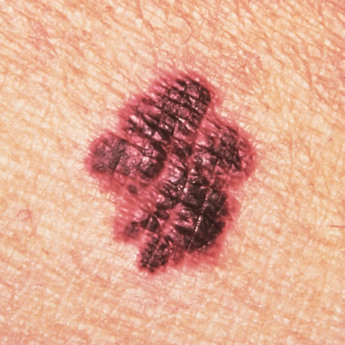

MelanomaMelanoma
Melanoma is an aggressive and potentially life-threatening type of skin cancer that develops in melanocyte pigment cells. Early identification is crucial before cells penetrate deep vascular tissue.
Often asymmetric with irregular borders
Can develop on sun-exposed or unexposed skin